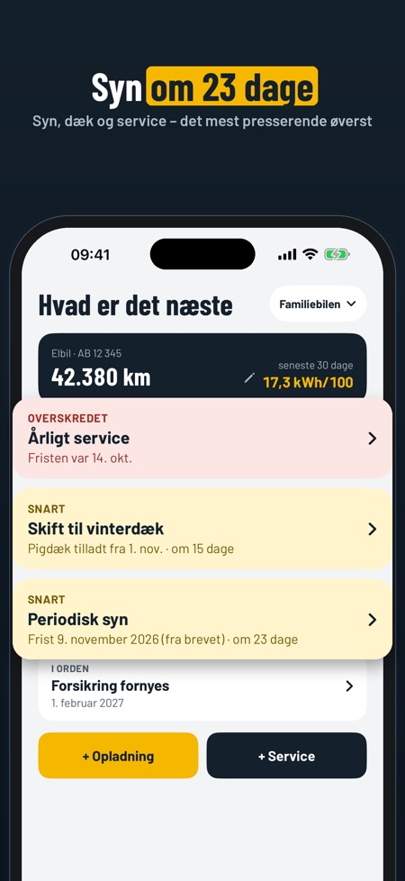
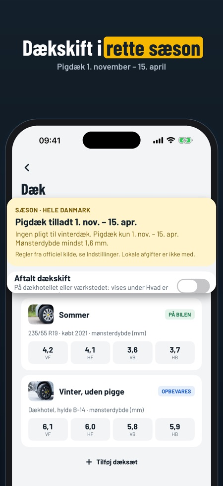
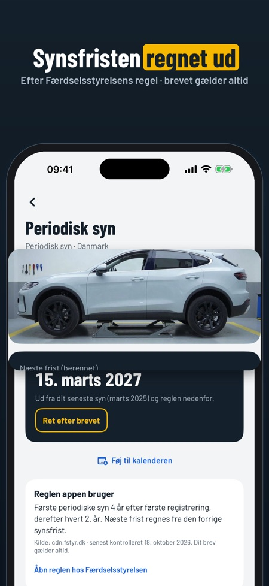

Servicebog, dæk og opladning. Pigdæk er tilladt fra 1. november. Bilbogen viser næste syn, hvornår dækskiftet passer, og hvad bilen koster – uden konto, alt på telefonen.



Ved du, hvornår bilen skal til syn? Bilbogen regner det ud fra registreringsattesten og Færdselsstyrelsens regel – og minder dig om dækskift og service. Hele historikken bliver gemt, til du sælger bilen.
HVAD ER DET NÆSTE
• Syn, service, dækskift, forsikring og grøn ejerafgift på én skærm, det mest presserende øverst
• Påmindelser før fristerne
PERIODISK SYN
• Næste synsfrist regnes ud fra første registrering og Færdselsstyrelsens regel (4 år, derefter hvert 2. år)
• Står der en anden dato i indkaldelsen? Skriv den ind – brevet gælder altid
• Tjekliste før synet, og fristen direkte i kalenderen
DÆK
• Pigdæksæsonen 1. november – 15. april
• Aftalt dækskift på dækhotellet, med påmindelse dagen før
• Sommer- og vinterdæk med mønsterdybde pr. hjul, og hvor de opbevares
• Advarsel, når mønsterdybden er under kravet
BRÆNDSTOF OG OPLADNING
• Liter eller kWh, pris og kilometerstand
• Forbrug pr. 100 km, regnet ud fra fuld tank eller fuld opladning
• Kilometerstanden kan ikke gå baglæns, og appen spørger, hvis et tal ser forkert ud
• Opdater kilometerstanden direkte fra forsiden
SERVICE OG UDGIFTER
• Servicebog med værksted, hvad der blev lavet, pris og scannet kvittering
• Næste service efter dit eget interval i km eller måneder
• Udgifter pr. måned og kategori samt pris pr. km
SALGSRAPPORT OG DOKUMENTER
• Hele historikken som PDF til køberen, med kvitteringer hvis du vil – og skjulte priser hvis du vil
• Se rapporten med dine egne registreringer, før du køber
• Registreringsattest, forsikringspolice og garanti scannet og samlet pr. bil
• Eksport af alle registreringer som CSV
BACKUP
• Gem alt som én fil og flyt det til en ny iPhone – uden køb
• Påmindelse, når det er længe siden sidste backup
Ingen konto og intet nummerpladeopslag: du indtaster selv bilen, og alt gemmes på telefonen.
PRIS
Én bil, log, kvitteringer, syn, dækpåmindelser og backup kan bruges uden køb. Flere biler, udgifter og grafer, deling af salgsrapporten, dokumenter og CSV låses op med et engangskøb. Intet abonnement.
Reglerne kommer fra Færdselsstyrelsen, Statens vegvesen, Transportstyrelsen og Traficom, med kilde og dato i appen. Bilbogen er uafhængig og ikke tilknyttet dem. Tjek altid dit brev.